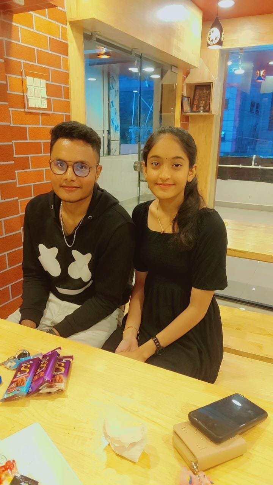
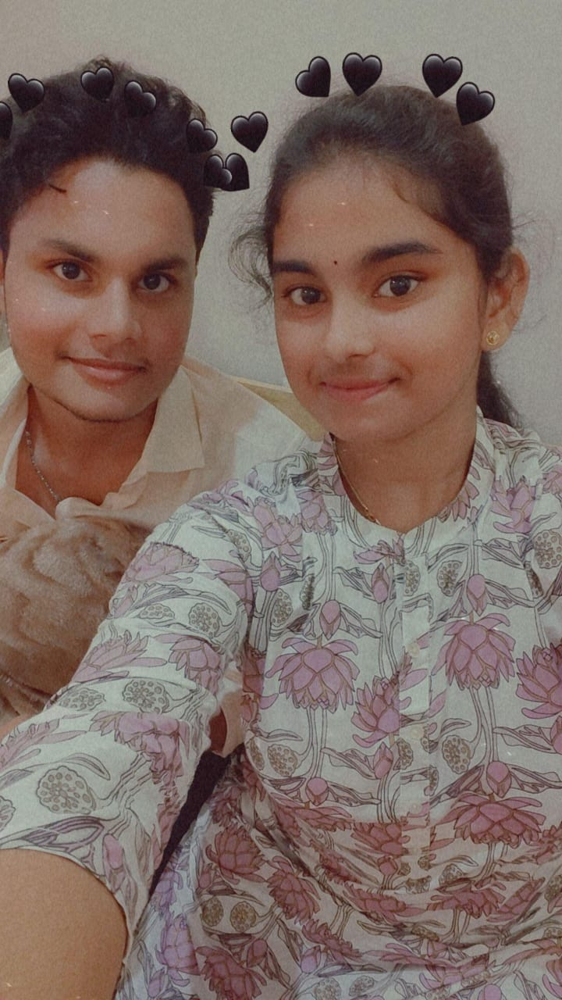
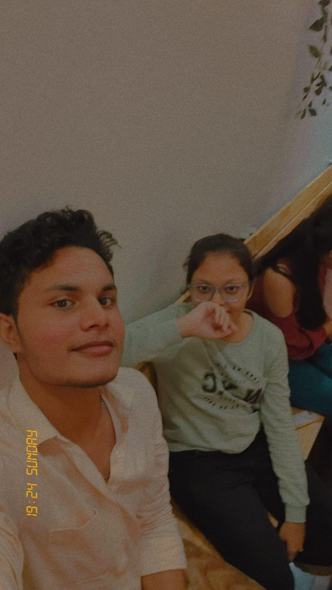

Our friendship started when my best friend came in as a new admission to our class. Both of us were hesitant to talk to each other at first, but gradually we developed a bond. I remember the first time my best friend tried to talk to me; I rolled my eyes because I thought there was no use and we wouldn’t hit it off. However, to my surprise, we became best friends by the end of the session year. We learned so many things about each other and found out that our taste in music and fashion was so similar. Since then, there was no stopping us. We spent all our time together and our friendship became the talk of the class. We used to help each other out in studies and visited each other’s homes as well. We made sure to have lunch together on Sundays. We also used to watch movies and cartoons together. On our summer break, we even went to summer camp together and made a lot of memories. Once during the summer holidays, she also accompanied me to my maternal grandparents’ home. We had a fabulous time there. Moreover, we even invented our own handshake which only both of us knew. Through this bond, I learned that family doesn’t end with blood because my best friend was no less than my family. Friendship is one relationship that you choose, unlike all other relationships.
  